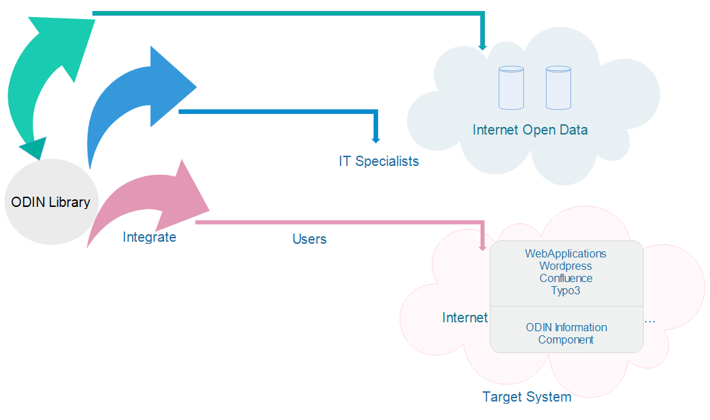
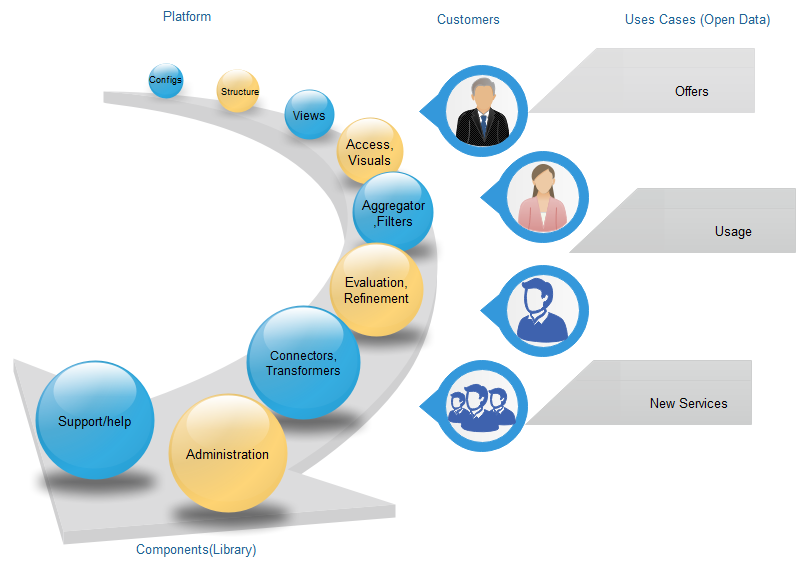
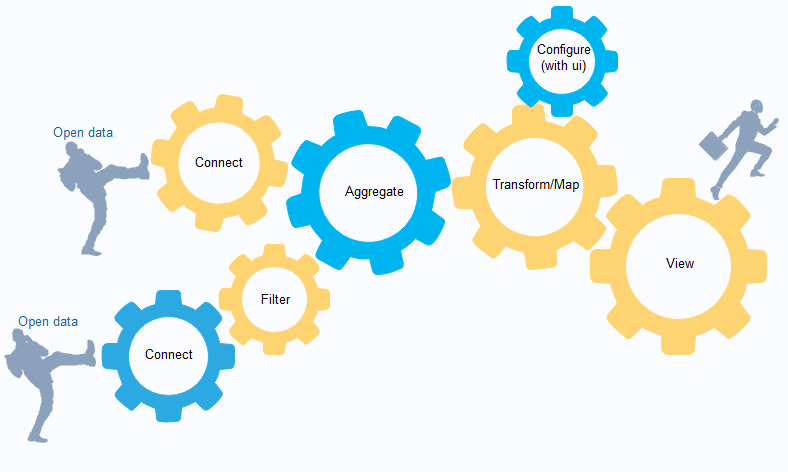

ODIN stands for Open Data Innovation. On the Internet large variety of open data can be found . These are the data that are made available for open use by authorities and by companies as well.
The definition of OPEN describes the meaning open usage/open license availability. The vision is to increase the value of the Open Data. The general public, the public sector and the economy is provided with a web-based system that enables business users to efficiently process and integrate open data, thereby giving a qualitative boost to new impulses. The goal of ODIN is the provision of an "Open Data Innovation Platform". This platform is expandable and can be used by anyone.
1.Application based domains can be found in the communal area. (For example, the use of demographic, construction, transport and other data from the perspective of structural development)
2.Application based domains can be found in companies. It makes possible the creation of new components for potential businesses.
The components exists in Library provides specific basic functions, whose combination allows the exploration of the open data. The combination of components results in new components. Business users are developing open data-based Web Components.

The definition of OPEN describes the meaning open usage/open license availability. The vision is to increase the value of the Open Data. The general public, the public sector and the economy is provided with a web-based system that enables business users to efficiently process and integrate open data, thereby giving a qualitative boost to new impulses. The goal of ODIN is the provision of an "Open Data Innovation Platform". This platform is expandable and can be used by anyone.

It helps a suitably qualified business user to utilise the domain 'open data'. The user should be able to process open data ,convert into valuable open information and open data should be displaceable.1.Application based domains can be found in the communal area. (For example, the use of demographic, construction, transport and other data from the perspective of structural development)
2.Application based domains can be found in companies. It makes possible the creation of new components for potential businesses.

The user needs support in the selection of suitable (professional, technical) data sources - open data sources - as well as suitable components. In particular when selecting the components, the assistance of the user should take place by means of an innovative search.The components exists in Library provides specific basic functions, whose combination allows the exploration of the open data. The combination of components results in new components. Business users are developing open data-based Web Components.

The user is able to make his obtained information available as web-based. The integration of open data in existing web applications is greatly simplified. This avoids costly redevelopments of entire applications and availability of open data is made faster and more flexible for potential users.